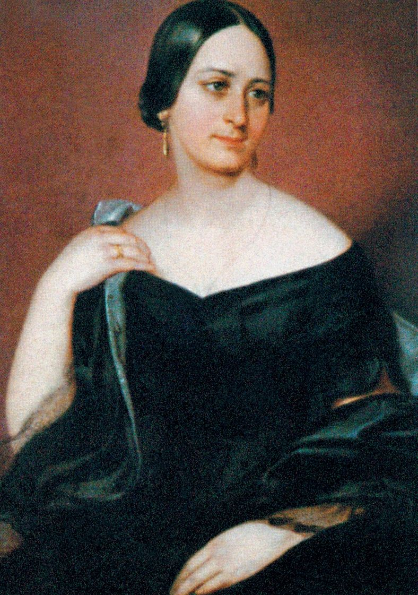

Slavná osobnost: Božena Němcová
| Portrét | Základní údaje | Významné činy | |
|---|---|---|---|
|  | Božena Němcová |
Babička Divá Bára Pohádky V zámku a v podzámčí Pohádky a pověsti Národní báchorky a pověsti |
|
| Narození: 4. února 1820 | Úmrtí: 21. ledna 1862 | ||
| Stručná charakteristika: Božena Němcová, rodným jménem Barbora Novotná, později Barbora Panklová byla česká spisovatelka národního obrození. Vzdělání, zejména německé, získala v letech 1830–1833 ve Chvalkovicích, svůj český pravopis zdokonalovala až v dospělosti, během prvního pobytu v Praze. Je spojována s emancipačními snahami ženskými i národními. Svým působením si vydobyla pozici české národní patronky a pomyslné strážkyně národní identity. |
|||
| Spisovatelka Božena Němcová | |||
| Odkaz na wikipedii: wikipedia.org/wiki/Božena_Němcová | |||
Značky a atributy tabulky
- colspan
- Atribut zajišťující rozpětí přes několik sloupců
- rowspan
- Atribut zajišťující rozpětí přes několik řádků
- table
- Značka ohraničující celou tabulku
- thead
- Záhlaví tabulky